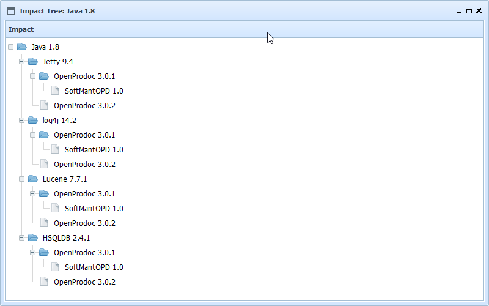

This form display a tree with all the products version this product version affects to. The analysis is recursive so it will display the dependencies up to the last level.
This allows to analize the impact of changing, deprecating or stopping to license a library or product.
Each product will only appear once in each level, but it can appear several times at different points, since different products may have the same dependency (libraries, databases to be installed, Java, .Net, etc.)

In SMO Tree there is a complete view of operations and forms.